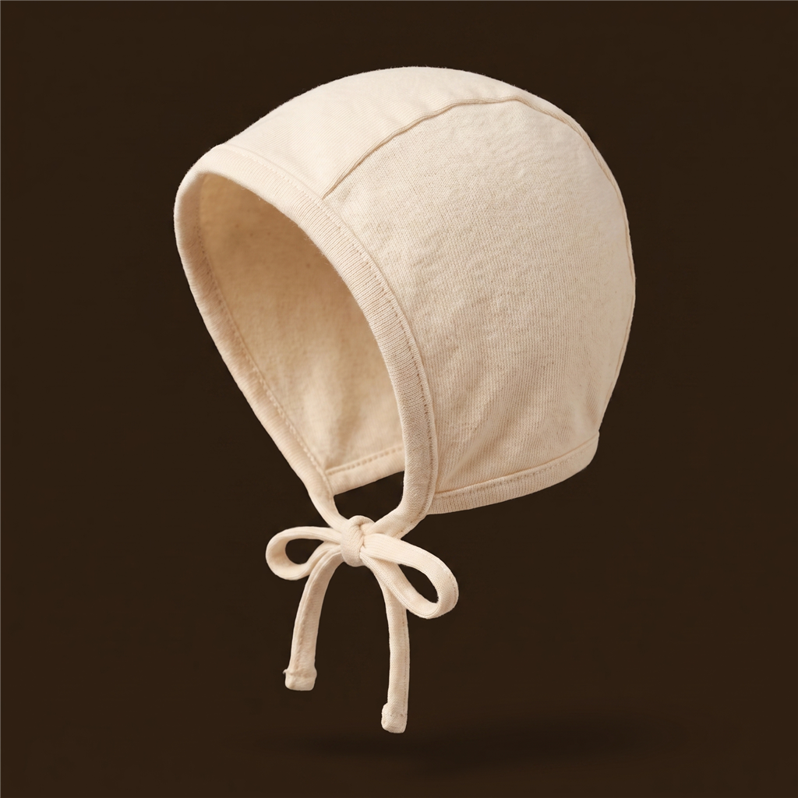
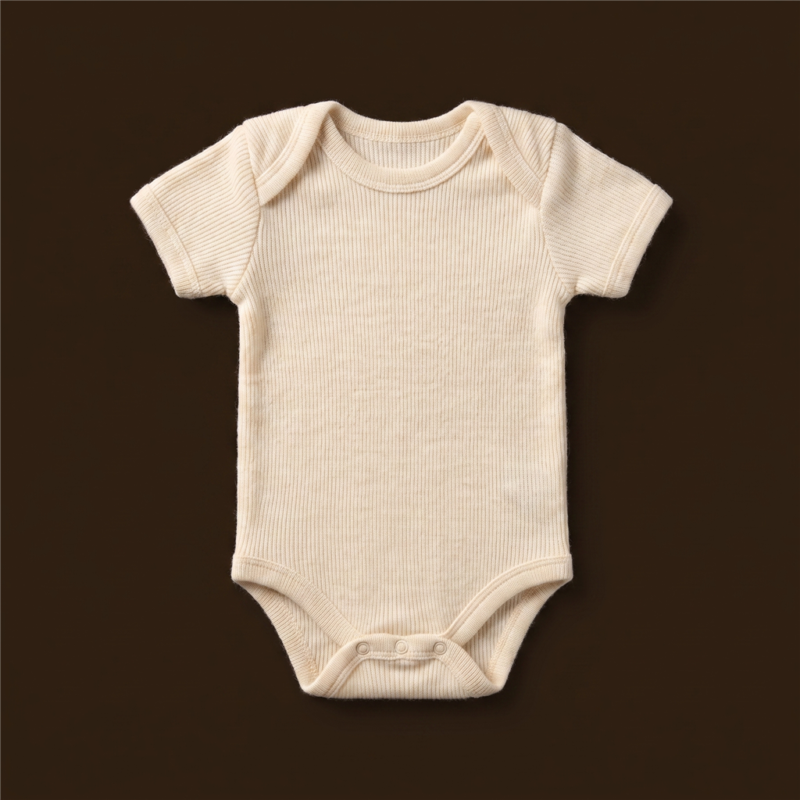
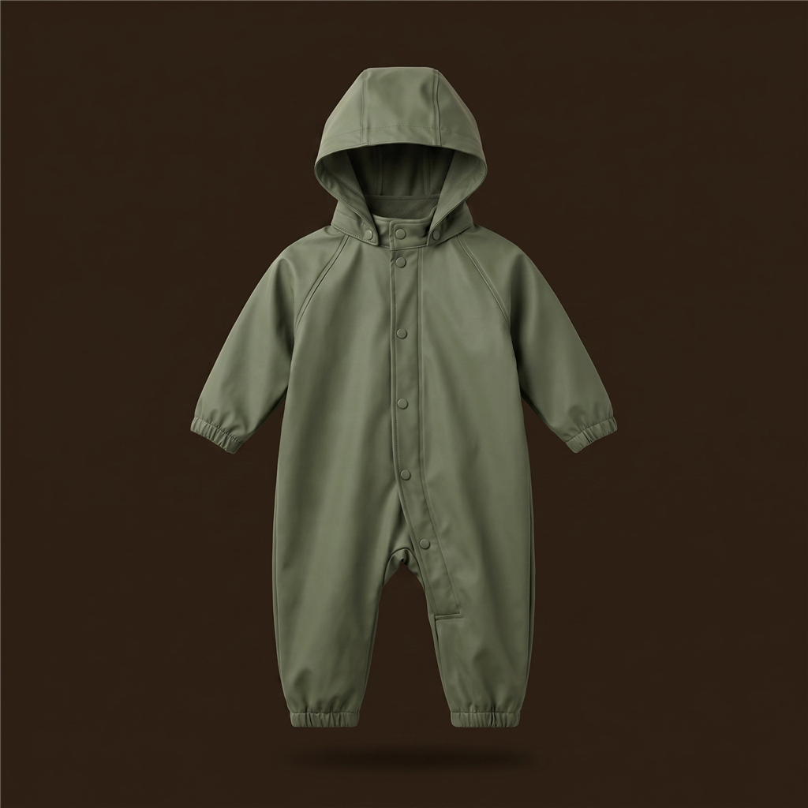
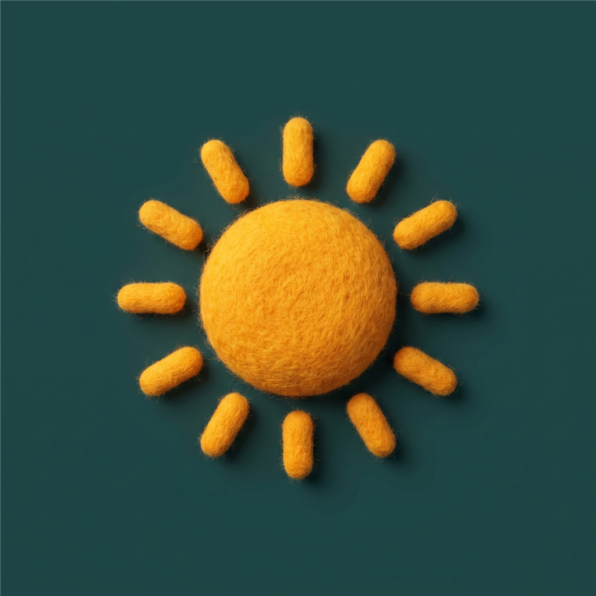
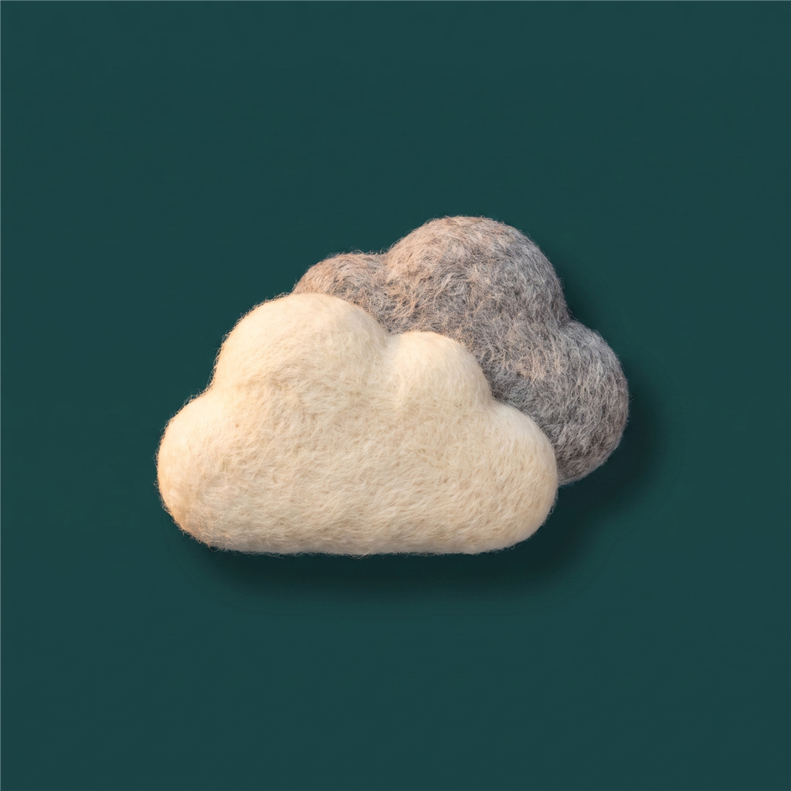
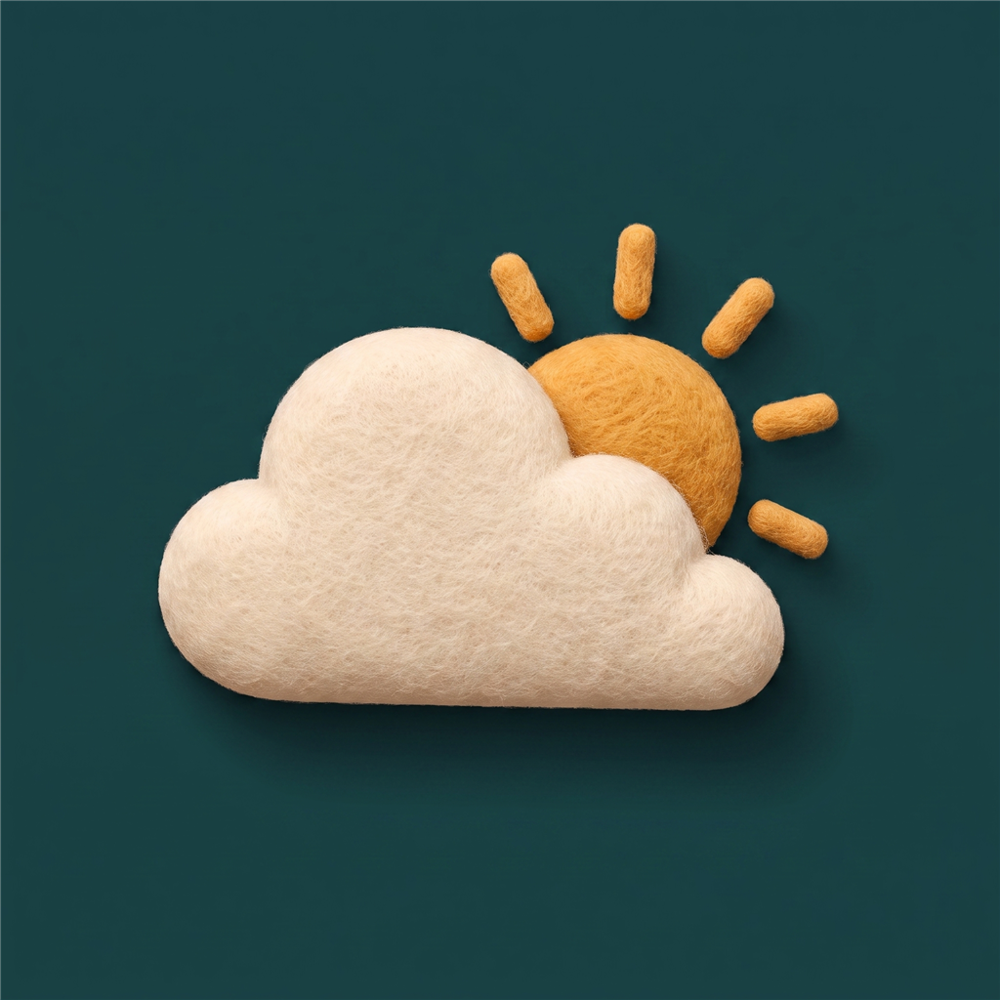

Lillian · Trondheim
Mer beskyttelse enn i dag. Legg også regnvotter og ekstra sokker i sekken.



+4
15° Ingen endring i antrekket
14° Ingen endring i antrekket
13° Tørrere, tilbake til vanlig antrekkSe enda lenger fram, slik at dere kan planlegge tur, bursdag eller helg i god tid.